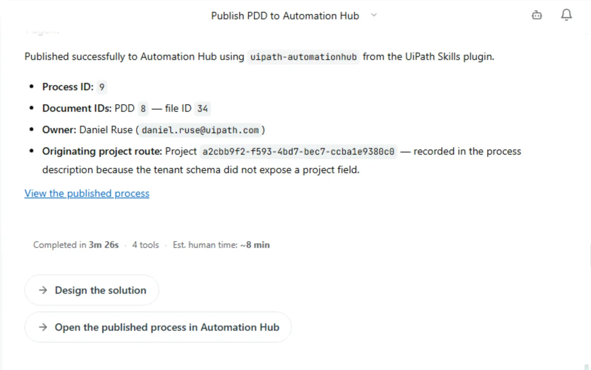

From Process to Production¶
Here is our plan for this exercise:
- See how the PDD you just published travels on, from design to build, run and improvement.
- Turn the Cobalt Ridge design into a Solution Design Document (SDD) with Cartographer.
- Hand the SDD to a coding agent that builds, tests and publishes the solution on the UiPath Platform.
Goal¶
By the end of this exercise you'll have followed one design all the way down the line. Your Cobalt Ridge PDD becomes an SDD, the SDD becomes a working solution in Maestro and Orchestrator, and the process map, the documents and the solution end up linked in one place. You'll also see how a change to the map finds its way back to the people, and the agents, who maintain the automation.
The PDD isn't the end of the story¶
In most organizations, a process document is where the work stops being visible. It gets attached to an email, someone rebuilds it as a slide, and the developer who finally builds the automation never sees the evidence behind it.
On the UiPath Platform, the design keeps moving. Here's the journey:
Filled dots: the stages where Cartographer works. Open dots: where the rest of the UiPath Platform takes over.
| Stage | What happens |
|---|---|
| Discover | Cartographer captures the process from your evidence. It asks only about real gaps, recommends an answer, and you decide. |
| Document | The PDD says what the process does and why. The SDD says how to build it. Every document is generated from the Map of Work, never invented, and changing a fact updates only the sections built from it. |
| Build | A coding agent such as Claude Code reads the SDD. The UiPath skills teach it how to build on UiPath, so it can plan the tasks, build the solution and test it. |
| Collaborate | The documentation goes to the Process Repository in Automation Hub, next to the process map. The solution goes to Studio Web, where your team can review and own it. |
| Run | The solution is deployed to Orchestrator and runs as an agentic process in Maestro: agents, robots and people working on the same case. |
| Improve | Analysts refine the process map themselves. Developers and coding agents are notified to update the automation, and runtime insights flow back into the Map of Work. |
The point is simple: the same design is carried from the first interview to the running process. Nothing is retyped, and nothing loses its link to the evidence and the KPI it serves.
Hands-on: take the warranty design to production¶
Before you begin: prerequisites
Have these ready before you start:
- The first exercise, finished — your Cobalt Ridge project, with the PDD published to Automation Hub.
- A coding agent — this guide uses Claude Code.
- Node.js — needed to install the
uipCLI. - A UiPath Cloud account. In this workshop we will use:
https://staging.uipath.com/uipathlabsworkshop/Fusion_Cartographe_20260921_ocrw. Talk to your trainer if you are not invited.
1. Ask Cartographer to design the solution¶
Go back to your Cobalt Ridge project in Cartographer. When you published the PDD, the confirmation offered a Design the solution follow-up. Click it.

If you don't see the follow-up any more, ask for it directly:
Cartographer turns the TO-BE into a solution architecture on the UiPath Platform. Your future state is a case, so expect the SDD to be built around Maestro case orchestration, with the AI agents, human-in-the-loop tasks and integrations your design calls for.
Give it time
This is a big pass. Expect the SDD to take around 20 minutes. When it finishes, the agent also estimates how much manual effort the same work would have taken.
2. Review the SDD and mark it as reviewed¶
- Open Solution design (SDD) in the left navigation. Walk the table of contents: process overview, diagram, activities, gateways and events, data objects, integrated components, error handling, triggers, project structure, testing strategy and next steps.
- Read the summary in the conversation. It lists the status, the template validation result, the architecture, what the SDD covers, the result of an independent review, and any open items. Open items are tagged [SME REVIEW] so you know exactly what still needs a human answer.
- Cartographer deliberately leaves the build hand-off open until you approve the design. Mark the SDD as reviewed in the document panel.
- Click Download to save the SDD as a Word document.
Why this matters
The build never starts from an unreviewed design. A person signs off on the SDD before any coding agent touches it.
3. Get your coding agent ready¶
Your coding agent needs two things to build on UiPath: the uip CLI to talk to the platform, and the UiPath skills to know how to use it.
-
Install the CLI. This gives you the
uipcommand: -
Sign in to the workshop environment. Your coding agent reuses this session, so it acts as you on the platform:
-
Install the UiPath skills for Claude Code:
-
Check the setup:
Sessions, identity, and security
The agent inherits your session and acts with your permissions. Avoid approving a blanket rule for every uip command, since that also covers destructive ones. Approve read and list commands as they come up instead.
4. Hand the SDD to the coding agent¶
- Create an empty folder for the solution, for example
CobaltWarrantySolution, and open it in Claude Code. -
Attach the SDD you downloaded and send:
Here you have the SDD of the automation solution we have to build for the warranty resolution process at Cobalt Ridge Automation. Build, implement and then test the uipath solution according to the SDD and then publish it on Orchestrator. Prefix the name of every artifact you create with {YourName}. -
Watch how it starts. The agent reads the SDD and loads the UiPath planner skill, which handles SDD-driven builds. The SDD carries a planner hand-off marker, so the agent knows which build path to follow. It then checks your tenant login and any existing project folder, and looks up the Integration Service connections it will need, before it derives the build tasks.
- Answer its questions as they come up, and approve commands as it runs them.
Why the name prefix?
Everyone in the workshop builds in the same tenant. A {YourName} prefix keeps your packages, processes and agents from colliding with your neighbour's.
5. Review what was built in Studio Web¶
Open Studio Web and find your solution. You should recognise the TO-BE you designed in Cartographer, now executable:
- The Maestro process, with its stages, decisions and handoffs.
- The AI agents, each with a system prompt that describes its role. Open one and check that it matches the role in your design. The variance agent from the first exercise is a good one to look at.
- The human-in-the-loop tasks, such as the high-variance verification you added live.
- Any RPA workflows or integrations behind the system tasks.
Check that Validation issues shows zero before you go any further.
6. Publish the process and the solution¶
Publishing puts each piece where it belongs:
| What | Where it goes |
|---|---|
| Process documentation and map | Process Repository in Automation Hub, linked to the Map of Work |
| Solution | Studio Web |
| Deployment | Orchestrator and Maestro |
Open your Cobalt Ridge entry in Automation Hub. Under Documentation, the process map now sits next to your PDD and SDD, not in a slide or an email. Open the map to see the model the solution runs.
7. Run it and watch it work¶
- Start a test run of the process in Maestro and follow the instance as it moves through the stages.
- Open Action Center when a human task comes up, and complete it.
Going further
Your coding agent can build more than the process. Ask it for a simple warranty desk for the Cobalt Ridge operations team: one screen with every case, its status and its handoffs, built on the same solution.
8. Close the loop¶
- In Automation Hub, open the process map and choose Edit Process Model.
- Make a small change to the model and save it.
When an analyst changes the model, the developers or coding agents who own the automation are notified to update it. Runtime insights from the running process flow back into the Map of Work. That's the Improve stage: the design and the automation keep improving together, long after the PDD was signed off.
Training Environment
Log in at https://staging.uipath.com/uipathlabsworkshop and remember using tenant Fusion_Cartographe_20260921_ocrw for this exercise.